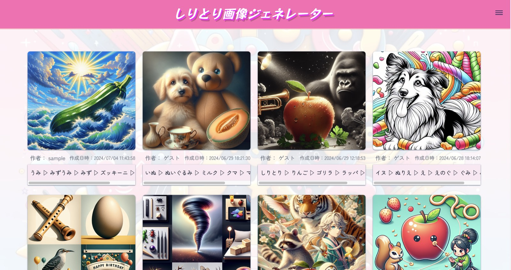
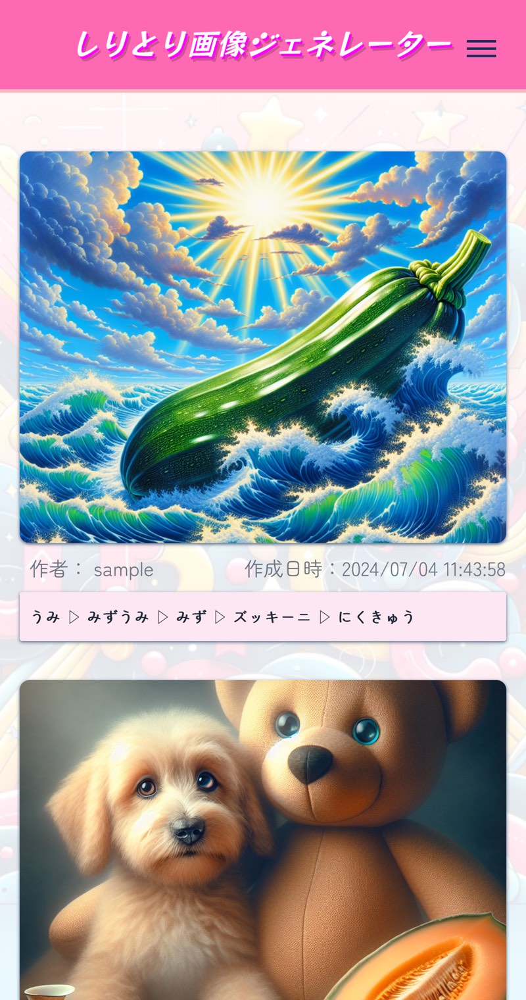
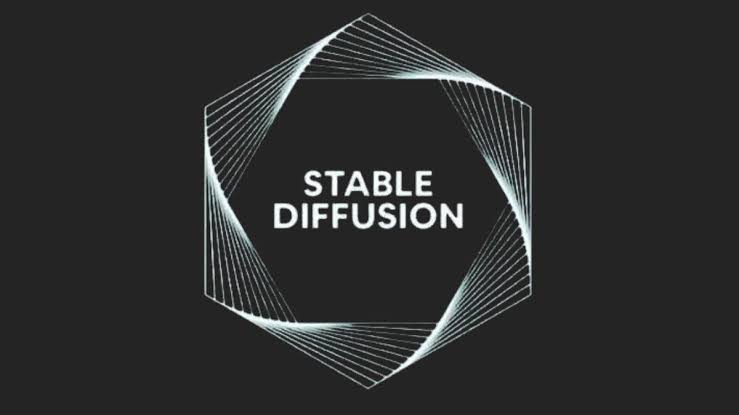

Works 01
しりとり画像ジェネレーター
Word Chain Image Generator


- 開発環境
- Ruby / Ruby on Rails / Tailwind CSS / JavaScript / PostgreSQL / Render / AWS S3 / StableDiffusion / OpenAI(DALL-E3) / Google Apps Script / Twitter API / Tiny_URL / GitHub / GitHub Actions / Figma / draw.io / Cursor / Google Analytics
- 概要
- 制作時間 150時間
- 現在サービス停止中
OUTLINE
アプリケーションの概要ローマ字タイピングの習得を目的とした小学生向けアプリケーションです。
画像生成機能が興味・動機づけとなり、プロンプトとなるしりとりをタイピング形式で行うことで結果的にローマ字タイピングの習得につながります。
しりとりの結果をプロンプトとして画像生成を行い、どんな画像ができるかを楽しみながらローマ字タイピングの練習に取り組むことができます。
開発に至った経緯
2020年より小学1年生からラップトップPCが貸与され幼少期からITリテラシーが求められる時代になりました。
PCを扱うためには基本的なキーボードタイピングが必要で、我が子に対し早いうちからキーボードタイピングを覚えさせることが大切だと考える親御さんも多くいます。
実際に私の長女がローマ字タイピングの習得ができず、かと言って「練習するのもつまらない！ローマ字も覚えたくない！！」といった課題を抱えておりました...
ローマ字そのものを教えることはできるが
なんとか主体的に学習につながる環境づくりをサポートできないか。
といった考えから『子供たちがローマ字入力でのキーボードタイピングを習得しやすく、楽しく学べる環境を提供し、ITリテラシー向上のきっかけになることで世の中への貢献になれば』という想いで企画、開発に至りました。
開発で工夫したこと

テストコード実装においてテストのたびに画像生成APIを叩く処理をエミュレートし外部APIによる依存を制御することでAPIコストを抑制しテストの安定性を向上させました。
画像生成機能において適切な生成AIモデルを選択し、ネガティブプロンプトをあらかじめ制御することで不適切な画像を生成させない仕様としました。
画像生成のリクエスト制限（429エラー）やサーバーエラー（500, 503）の対策として指数バックオフ方式（2秒〜32秒、最大5回）でリトライを行うロジックにしました。
また、429エラーの場合は別の生成モデルのAPIへフォールバックする仕様とし、画像生成の安定性向上に努めました。